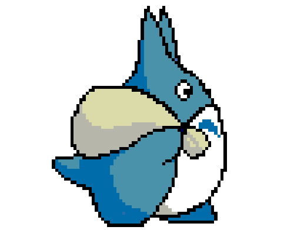

<!DOCTYPE html>
<html lang="en">

<link rel="stylesheet" href="style.css">
<!-- file esterno che determina il movimento delle sfere -->

<head>
    <meta charset="UTF-8">
    <meta http-equiv="X-UA-Compatible" content="IE=edge">
    <meta name="viewport" content="width=device-width, initial-scale=1.0">
    <meta name="viewport" content="width=device-width, initial-scale=1">
    <title> Studio Ghibli</title>
    <link rel="icon" type="image/x-icon" href="immagini-gif/logo.png">
    <!-- logo, disegnato da me, vicino al titolo della pagina -->

    <style>
        #myDiv {
            display: none;
            text-align: center;
        }
        
        @import url('assets/font/VT323-Regular.ttf');
        @font-face {
            font-family: myFirstFont;
            src: url(assets/font/VT323-Regular.ttf);
        }
        
        body {
            margin: 0%;
            border: 0%;
            padding: 0%;
            ;
        }

        .center {
            text-align: center;
        }
        
        .titoli {
            font-family: myFirstFont;
            font-size: 40px;
        }
        
        .sfondo-blue {
            background-color: DodgerBlue;
        }
        
        .sfondo-img {
            background-image: url('immagini-gif/sfondo\ index.gif');
            background-attachment: fixed;
            /*  background-size: 100% 100%;  */
            height: 100%;
            /* Center and scale the image nicely */
            background-position: center;
            background-repeat: no-repeat;
            background-size: cover;

        }
    </style>
</head>


<body id="body" class="cl-primary sfondo-blue" style="margin:0;"></body>

<div class="centered">
    <h1 id="totoro" class="loader-text"> </h1>
</div>
<div id="gira" class="centered rotator">
    <div class="first-circle centered"></div>
</div>

<div style="display:none;" id="myDiv">
    <div class="center">

        <a href="film.html" target="_blank">
            
        </a>
    </div>


    <div class="center">
        <a href="study.html" target="_blank">
            
        </a>

        

        <a href="story.html" target="_blank">
            
        </a>
    </div>


</div>

<!-- parte dello script che fa muovere totorino -->
<script>
    var myVar;

    function myFunction() {
        myVar = setTimeout(showPage, 3000);
    }

    function showPage() {
        document.getElementById("gira").style.display = "none";
        document.getElementById("totoro").style.display = "none";
        document.getElementById("myDiv").style.display = "block";
        document.body.classList.add('sfondo-img');
        document.body.classList.remove('sfondo-blue');

    }
    myFunction();
</script>

</body>

</html>


